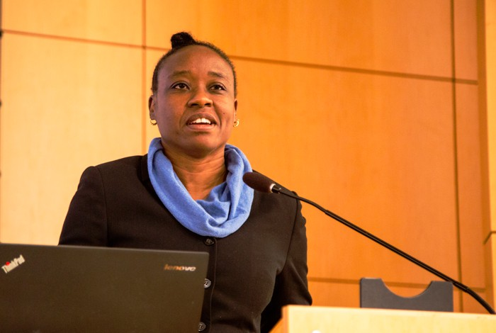

Professor Iruka Okeke

Professor Iruka Okeke
FACTS
- Professor Iruka Okeke is a Professor at the University of Ibadan, Ibadan.
- She is a seasoned researcher who studies the genetics of bacterial infectious diesases
- Professor Iruka is a Fellow of the Nigerian Academy of Sciences and the African Academy of Sciences.
- She teaches molecular bacteriology at the University of Ibadan.
- She is also a leader in the field of antimicrobial resistance where she is using whole genome sequencing technologies to fight antimicrobial resistance in Nigeria and Africa
You can follow the link to see more details about this great scientist